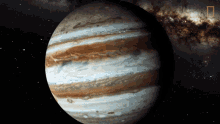
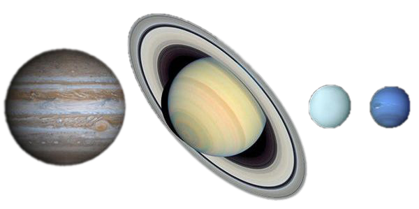

Júpiter es el planeta más grande del sistema solar y el quinto en orden de lejanía al Sol. Es un gigante gaseoso que forma parte de los denominados planetas exteriores. Recibe su nombre del dios romano Júpiter (Zeus en la mitología griega). Es uno de los objetos naturales más brillantes en un cielo nocturno despejado, superado solo por la Luna, Venus y algunas veces Marte. Se trata del planeta que ofrece un mayor brillo a lo largo del año dependiendo de su fase. Es, además, después del Sol, el mayor cuerpo celeste del sistema solar, con una masa casi dos veces y media de la de los demás planetas juntos (con una masa 318 veces mayor que la de la Tierra y tres veces mayor que la de Saturno, además de ser, en cuanto a volumen, 1321 veces más grande que la Tierra). También es el planeta más antiguo del sistema solar, siendo incluso más antiguo que el Sol; este descubrimiento fue realizado por investigadores de la universidad de Münster en Alemania. Júpiter es un cuerpo masivo gaseoso, formado principalmente por hidrógeno y helio, carente de una superficie interior definida. Entre los detalles atmosféricos es notable la Gran Mancha Roja (un enorme anticiclón situado en las latitudes tropicales del hemisferio sur), la estructura de nubes en bandas oscuras y zonas brillantes, y la dinámica atmosférica global determinada por intensos vientos zonales alternantes en latitud y con velocidades de hasta 140 m/s (504 km/h).
| Característica | Jupiter |
|---|---|
| Distancia orbital (km) | 778.340.821 |
| Radio ecuatorial (km) | 69.911 |
| Volumen (km3) | 1.431.281.810.739.360 |
| Masa (kg) | 1.898.130 x1021 |
| Densidad (g/cm3) | 1,326 |
| Gravedad en superficie (m/s2) | 24,79 |
| Velocidad de escape (km/h) | 216.720 |
| Duración del día | 9 horas, 56 minutos |
| Duración del año | 12 años terrestres |
| Velocidad de su órbita alrededor del Sol (km/h) | 47.002 |
| Composición de la atmósfera (exosfera) | Hidrógeno y Helio |
| Lunas descubiertas | 79 |
La estructura interna de un planeta es uno de los aspectos más difíciles de conocer porque no puede hacerse una observación directa de sus capas. La distribución de materiales y estados físicos dentro de un planeta se deduce a partir de mediciones como la masa del planeta, su gravedad, su campo magnético, etc. En el caso de Júpiter hay todavía mucha incertidumbre en cuanto a su estructura interna. Los datos conocidos indican que Júpiter tiene probablemente un núcleo sólido, probablemente formado por hierro y silicatos. Alrededor de este núcleo hay una capa de hidrógeno. Debido a la alta presión a la que está sometido este hidrógeno, es posible que se encuentre en un estado conocido como hidrógeno metálico. Esto indica que el hidrógeno en esta capa se comporta como un conductor eléctrico y probablemente es el origen del fuerte campo magnético de Júpiter.Finalmente hay una capa de hidrógeno líquido, similar a un océano pero con hidrógeno en lugar de agua. La presión de este hidrógeno disminuye con la altitud y poco a poco se produce una transición a estado gaseoso. Estas capas finales contienen también otros elementos, sobretodo helio.
Júpiter orbita alrededor del Sol en una órbita con un radio medio de 778 millones de kilómetros. Esto significa que tarda 4332.6 días en dar una vuelta alrededor del Sol, o lo que es lo mismo 11.82 años. |
 |
Actualmente se conocen 79 lunas que orbitan Júpiter y es probable que todavía queden algunas por descubrir.Muchas de estas lunas son asteroides de pocos kilómetros de diámetro y en consecuencia muy difíciles de ver desde la Tierra. En 2018 fue cuando se descubrieron las 10 últimas lunas que se han añadido a la lista. La mayoría de estas lunas siguen órbitas irregulares y altamente excéntricas.La proximidad entre el cinturón de asteroides y el planeta Júpiter ha hecho que muchos asteroides se hayan desviado de su órbita inicial y hayan quedado atrapados en una órbita alrededor de Júpiter.A pesar de la gran cantidad de pequeñas lunas, Júpiter también tiene cuatro lunas de gran tamaño. Entre ellas está Ganimedes que es incluso más grande que Mercurio y es la luna más grande del sistema solar.
Las cuatro lunas son Ganímedes, Calisto, Ío y Europa. Se conocen también como los satélites galileanos porque fueron descubiertos por Galileo Galilei en 1610. Este descubrimiento fue importante para demostrar el model heliocéntrico del sistema solar. Fue una observación que demostró que existían cuerpos celestes que orbitaban alrededor de otros cuerpos y no solo alrededor de la Tierra.
A pesar de que los anillos más conocidos son los de Saturno, es importante saber que Júpiter también tiene un sistema de anillos. Esto hecho es poco conocido porque los anillos de Júpiter son difíciles de ver debido a su composición. De hecho, solo fueron descubiertos en 1979 gracias a la sonda Voyager 1. A diferencia de los anillos de Saturno que están formados por hielo, los anillos de Júpiter se originaron a partir de polvo. Probablemente fruto de impactos entre asteroides y las lunas de Júpiter.
La atmósfera de Júpiter es, por el solo hecho de ser la atmósfera más grande que conocemos, un fenómeno natural de gran importancia.Sus gases principales son el hidrógeno y el helio, los ingredientes de una estrella. También contiene otros gases como amoníaco, metano y agua.No es posible definir exactamente dónde empieza y dónde acaba la atmósfera de Júpiter porque el planeta no tiene una superficie sólida como en la Tierra. Si nos adentráramos en la atmósfera de Júpiter, simplemente veríamos que el ambiente se vuelve cada vez más denso y que se produce una transición paulatina hasta un estado totalmente fluido del hidrógeno. Para poder trabajar con una definición, la comunidad científica considera que la atmósfera de Júpiter tiene su base en el punto donde la presión atmosférica es igual a 1 bar.Uno de los aspectos más fascinantes de la atmósfera de Júpiter es la combinación de colores que se forma en sus capas superiores. Este fenómeno es el resultado de las nubes de amoníaco y agua que se mueven entre las capas de hidrógeno y helio. También existen franjas de distintos colores debido a las distribuciones de presiones. Debido a las diferencias de presión entre estas franjas y a la alta velocidad a la que se mueven, es habitual que se formen grandes tormentas en las fronteras entre dos franjas. Estas tormentas pueden durar centenares de años, dado que no hay ninguna superficie en su base que las frene. Una de estas tormentas es la Gran Mancha Roja de Júpiter que muy probablemente lleva en existencia más de 300 años. Esta tormenta tiene una extensión de más de 25000 kilómetros y sus vientos superan los 500 km/h.
Hasta el momento solo ha habido nueve misiones que han orbitado o sobrevolado Júpiter, todas ellas llevadas a cabo por la NASA. De todas estas misiones solo dos han entrado en órbita alrededor del planeta, el resto han simplemente observado Júpiter durante su trayecto hacia destinaciones más lejanas.Aún así, Júpiter es el planeta gaseoso que más sondas espaciales han visitado, probablemente por ser también el más cercano.
Las primeras sondas que sobrevolaron Júpiter fueron la Pioneer 10 en 1973 y la Pioneer 11 en 1974. Estas dos sondas tomaron las primeras imágenes en detalle de Júpiter y descubrieron también su fuerte campo magnético.
Las siguientes sondas en llegar a Júpiter fueron la Voyager 1 y la Voyager 2 en el año 1979. El objetivo de estas sondas era explorar los planetas y satélites del sistema solar exterior. Parte de su misión incluía un sobrevuelo cerca de Júpiter. Estas sondas descubrieron la presencia de los anillos de Júpiter y observaron en detalle sus satélites naturales.En 1989 se lanzó la sonda Galileo diseñada específicamente para estudiar Júpiter. La sonda llegó a su destinación en 1995 y fue la primera en entrar en órbita alrededor del planeta. Durante 8 años Galileo se mantuvo en operación observando en detalle tanto el planeta como sus satélites naturales. La sonda Galileo proporcionó gran parte del conocimiento sobre Júpiter que tenemos hoy en día y descubrió indicios de una posible existencia de océanos subterráneos en algunas de sus lunas.La otra única sonda que ha entrado en órbita alrededor de Júpiter es la sonda Juno, lanzada en 2011 y orbitando Júpiter desde 2016. Algunos de los objetivos de la sonda Juno son medir con detalle el campo gravitatorio y magnético de Júpiter para poder conocer más detalles sobre su composición.
Otras sondas que han realizado maniobras de sobrevuelo alrededor de Júpiter son Ulysses, Cassini-Huygens y New Horizons. Actualmente la Agencia Espacial Europea prepara la misión JUICE que tiene como objetivo explorar las lunas de Júpiter. La sonda JUICE será lanzada en 2022 y llegará a Júpiter en 2029.
Júpiter no es un destinación fácil de explorar debido a su naturaleza gaseosa. Las sondas espaciales pueden acercarse y observarlo desde una cierta altitud, pero no es posible realizar un aterrizaje dado que no tiene una superficie sólida. Cualquier sonda que intentase adentrarse en su atmósfera acabaría totalmente destruída por las altas temperaturas y presiones. Por este motivo, es totalmente imposible que llegamos a ver nunca una misión tripulada al planeta Júpiter. Aún así, no puede descartarse que los humanos lleguen algún día a visitar alguna de sus lunas, donde las condiciones para la supervivencia de la vida pueden ser más favorables
Tamaños comparativos de los planetas terrestres, Jupiter a la izquierda, Saturno, Urano y Neptuno.
Las presiones y temperaturas extremas de Júpiter hacen altamente improbable que cualquier tipo de vida haya podido desarrollarse o pudiera llegar a sobrevivir en este planeta. Sin embargo, este no es el caso de algunos de sus satélites naturales, donde las condiciones para la vida podrían ser mucho más favorables. En particular, algunas observaciones científicas han dado fuerza a la hipótesis de que existe un océano debajo la superficie de hielo del satélite Europa. Si esta hipótesis se confirmara, podría decirse que el satélite Europa tiene muchos de los ingredientes para dar lugar a la vida y lo convertiría en uno de los puntos del sistema solar con más interés para la exploración espacial.